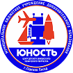
МИНИСТЕРСТВО ОБРАЗОВАНИЯ РОССИЙСКОЙ ФЕДЕРАЦИИ
Управление образования администрации Сергиево-Посадского городского округа
Муниципальное бюджетное учреждение дополнительного образования
ЦЕНТР ДЕТСКОГО (ЮНОШЕСКОГО) ТЕХНИЧЕСКОГО ТВОРЧЕСТВА
Мы — Центр детского технического творчества «Юность», и мы создаем пространство, где фантазия встречается с технологией, а любопытство превращается в навык. Здесь дети не просто учатся — они изобретают будущее. Наша миссия — открывать двери в мир творчества для каждого ребенка, помогая ему найти дело по душе и превратить увлечение в настоящее мастерство.
Найти нас легко
Мы работаем для вас в нескольких районах города. Учебные занятия ждут ребят с понедельника по пятницу с 09:00 до 20:00. Администрация готова помочь с 9:00 до 20:00 в будни.
Телефоны:
+7 (496) 540-49-38
+7 (916) 300-44-20
+7 (496) 549-04-91 - вахта
Напишите нам:
sepo_mbudo_unost@mosreg.ru
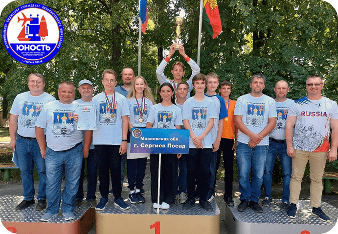
Возглавляет наш дружный коллектив Карпушов Сергей Александрович.Под его руководством работает команда талантливых педагогов, которые становятся настоящими наставниками для юных изобретателей.
В Центре преподают высококлассные педагоги, имеющие огромный опыт работы с детьми и подростками - 7 педагогов имеют высшую категорию и 6 педагогов первой категории. В Центре работают и много молодых педагогов, которые выросли из воспитанников, а сейчас успешно преподающих, и участвующих в различных соревнованиях, своим личным примером показывая стремление к вершинам спортивного мастерства.
В Центре за много уделяется современному материально-техническому обеспечению. Обучение проводится с применением самых передовых разработок, информационных технологий.
В ЦДТТ «Юность» большое внимание уделяется спортивным направлениям, именно здесь воспитанники приобретают наиболее профессиональные навыки изготовления моделей. Большое значение придается физической подготовке ребят, для чего они систематически занимаются спортом в спортзалах и на свежем воздухе. Все эти факторы благоприятно воздействуют на развитие детей и подростков. Кроме того, ученикам, занимающимся именно по спортивным направлениям, при успешном выступлении на соревнованиях, присваиваются спортивные разряды.
Так за время работы ЦДТТ воспитанниками были выполнены спортивные звания:
1- заслуженный тренер России
1 – заслуженный мастер спорта;
6 – мастер спорта международного класса;
32 – мастер спорта;
76 – кандидат в мастера спорта;
108 – 1-й разряд.
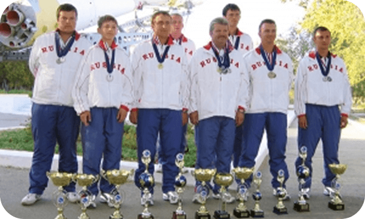
В Центре «Юность» учебные классы превращаются в лаборатории будущего. Здесь нет холодных, безликих кабинетов — есть динамичные пространства, где современные технологии живут бок о бок с творческой энергией детей.
Загляните в наши компьютерные классы. Это не просто ряды мониторов — это порталы в цифровую вселенную. Под тихий гул системных блоков здесь рождаются миры: дети пишут код для своих первых игр, моделируют трехмерные объекты и учатся говорить на языке технологий. В одном углу может рождаться дизайн виртуального персонажа, в другом — алгоритм для умного устройства.
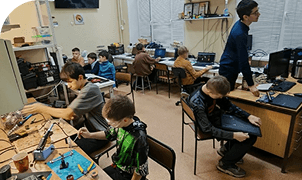
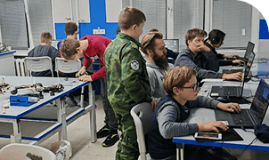
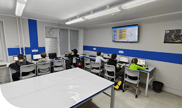
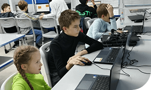
А в соседнем классе вы почувствуете другую, осязаемую магию. Здесь стоит тихий, но мощный гул 3D-принтеров, которые слой за слоем превращают идеи в реальные предметы. Рядом могут работать компактные лазерные гравёры, выжигающие на дереве или пластике детали для следующего большого проекта. Это пространство, где абстрактная мысль из компьютерной программы обретает вес, форму и может оказаться у вас в руках.
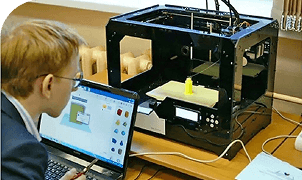
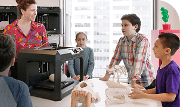
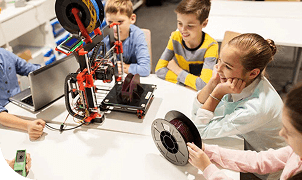
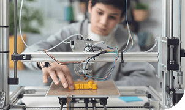
Но сердце настоящей инженерии бьётся в наших специально оборудованных мастерских для станков. Эти помещения созданы для серьёзной работы. Именно здесь мощные станки с числовым программным управлением (ЧПУ), такие как фрезерные или лазерные, выполняют точнейшие операции. Токарные и шлифовальные станки позволяют работать с металлом и деревом, превращая сырой материал в детали для роботов, моделей самолётов или инженерных конструкций. Здесь дети учатся не бояться масштаба, уважать материал и доводить задумку до совершенства.
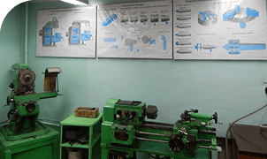
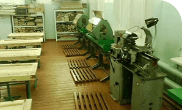
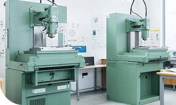
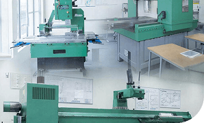
Таким образом, «Юность» — это больше чем центр. Это стартовая площадка для инженерной мысли. Здесь дети проходят уникальный путь: от идеи на экране к детали в руках, от вопроса «как это работает?» к уверенному «я это сделал». Мы верим, что первый самостоятельно напечатанный прототип, первая запущенная программа или первая деталь, выточенная на станке, — это и есть тот самый момент, когда ребёнок понимает: «Я могу создавать будущее. Я уже создаю его сейчас».